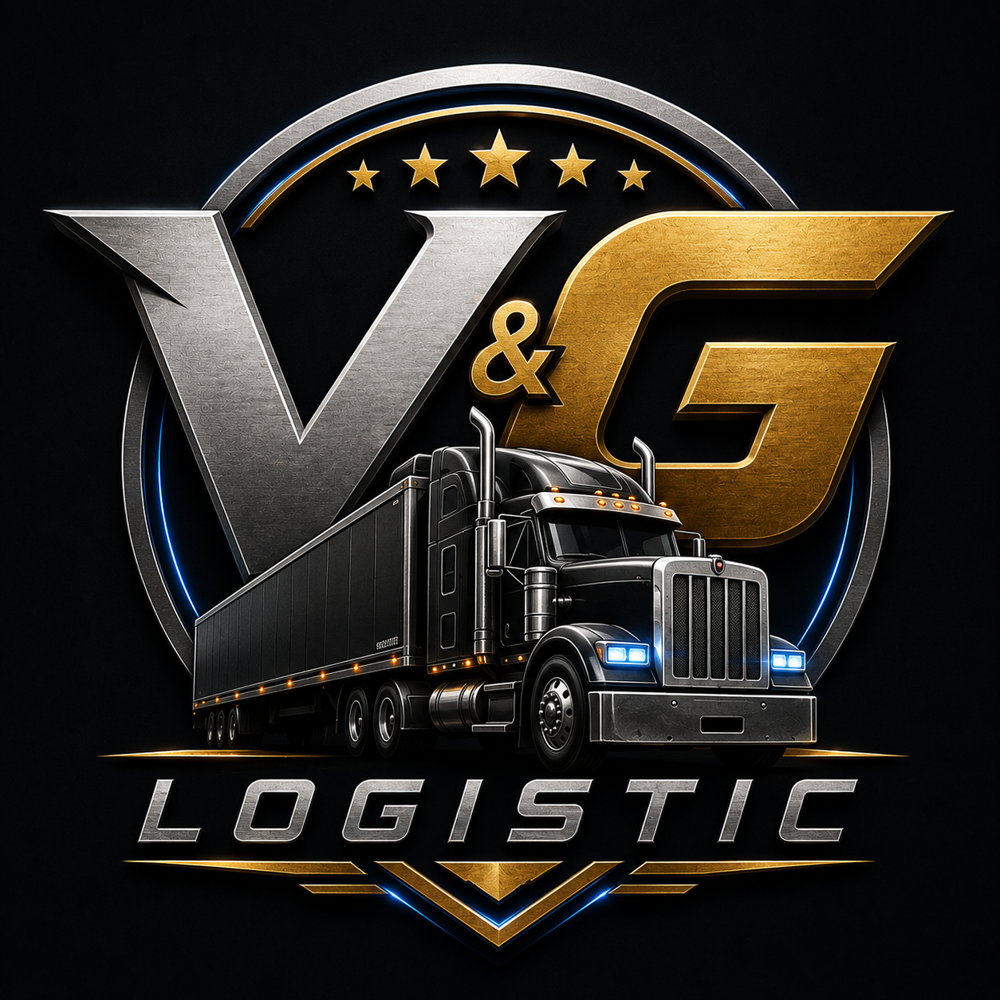
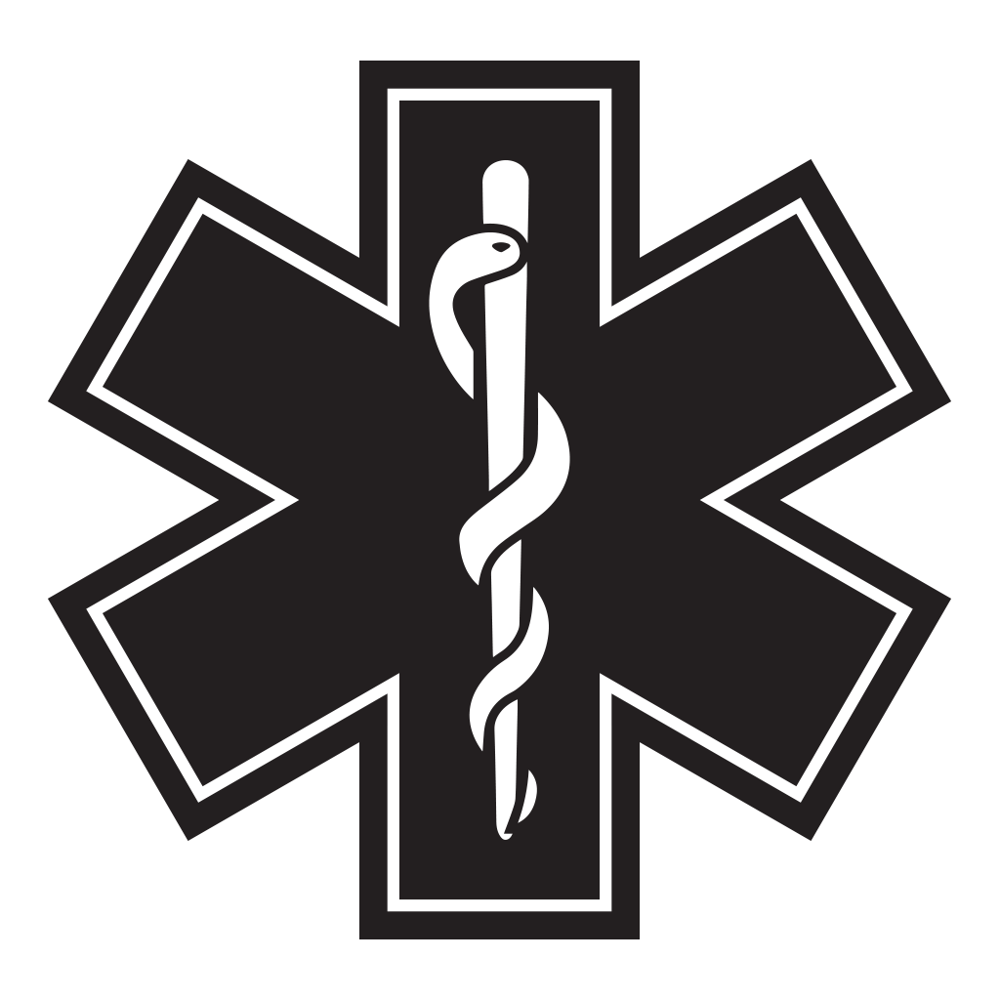
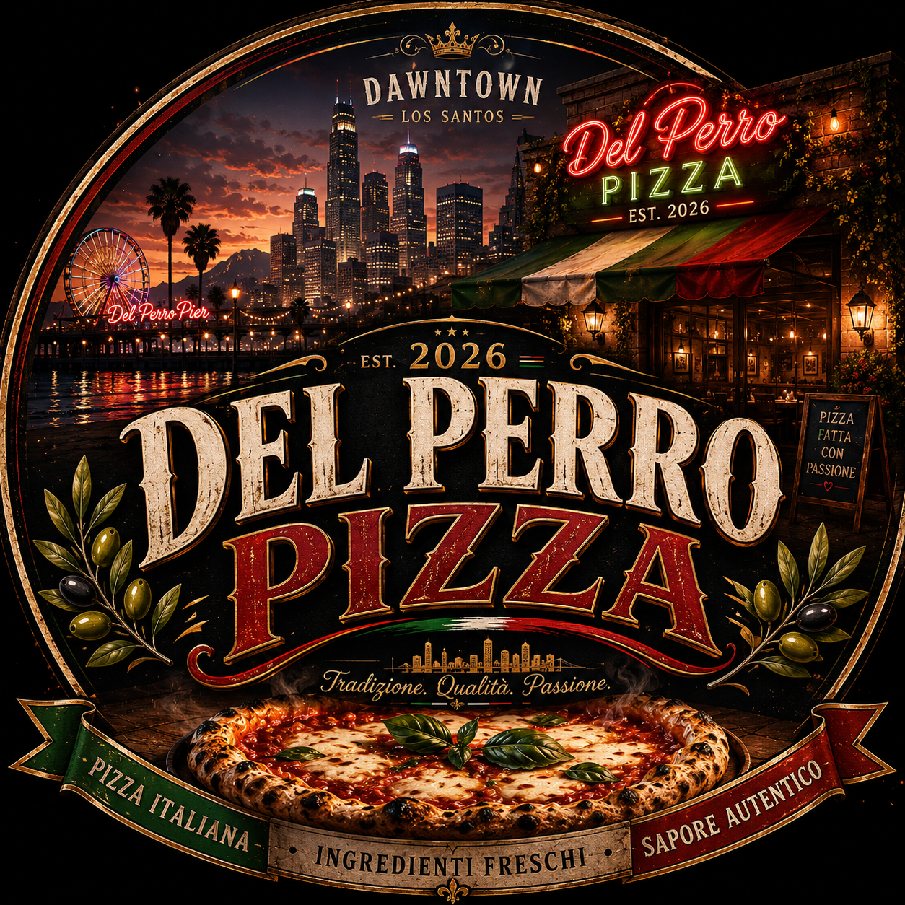

Rozbudowa floty
Aktualnie posiadamy 2 ciężarówki, a kolejne 3 pojazdy są już w drodze od dealera.

GrandRP • Sandy Shores • Est. 2026
V&G Logistic to nowoczesna firma transportowa w amerykańskim klimacie. Ciężki transport, mocna organizacja, czysta hierarchia i styl, który wygląda jak prawdziwa marka.
Company profile
Strona została zaprojektowana pod czysty, nowoczesny styl: ciemne tło, złoto, szkło, metal i mocny amerykański charakter bez przeładowania.
Aktualnie posiadamy 2 ciężarówki, a kolejne 3 pojazdy są już w drodze od dealera.
Części mechaniczne będą sprowadzane z innego stanu znanego z produkcji podzespołów do ciężkiego transportu.
Kandydaci na kierowców będą przechodzić badania psychologiczne i rozmowy sprawdzające predyspozycje.
Fleet operations
Firma działa z Sandy Shores, obsługuje dostawy dla partnerów oraz rozwija zaplecze logistyczne pod większą liczbę kierowców.
Management board
Założyciel i właściciel. Odpowiada za strategię, rozwój firmy oraz najważniejsze decyzje.
Wspiera zarządzanie firmą i nadzoruje codzienne działania operacyjne.
Koordynuje działalność firmy, organizację pracy oraz rozwój struktury.
Wspiera rekrutację, organizację zespołu oraz rozwój pracowników.
Odpowiada za kontakt z pracownikami, szkolenia i sprawy bieżące.
Business partners
Logotypy partnerów są wyeksponowane jak w nowoczesnym portfolio firmy — czysto, równo i bez taniego chaosu.

Dostawy dla restauracji meksykańskiej.

Wsparcie medyczne i bezpieczeństwo.

Dostawy składników spożywczych.
Company rules
Wszystkich pracowników obowiązuje poniższy regulamin. Dziękujemy za zaangażowanie i współpracę z firmą V&G Logistic.
Pracownicy są zobowiązani do punktualnego pojawiania się na zmianie oraz wykonywania powierzonych im obowiązków. Każdy pracownik ma obowiązek dbać o dobry wizerunek firmy i nie może uczestniczyć w działalności przestępczej podczas pracy. Dostawy muszą być realizowane zgodnie z prawem.
Zabronione jest angażowanie się w nielegalne wyścigi lub stwarzanie zagrożenia na drodze. Każdy wypadek lub incydent należy zgłosić przełożonemu.
Każde zniszczenie ciężarówki należy zgłosić przełożonemu oraz wysłać zdjęcie na odpowiednim kanale aplikacji firmowej.
Pojazdy firmowe mogą być wykorzystywane wyłącznie do realizacji zleceń V&G Logistic. Pracownik odpowiada za stan techniczny, tankowanie i naprawy. Zakazuje się używania pojazdów do celów prywatnych.
Pracownik ma obowiązek słuchać poleceń przełożonych. Problemy i konflikty należy zgłaszać bezpośrednio do kierownictwa.
Dłuższe nieobecności OOC należy zgłaszać na kanale w aplikacji firmowej. Spotkania odbywają się co tydzień w niedzielę o 20:00; nieobecność należy zgłosić przełożonemu.
Członkowie V&G Logistic zobowiązani są do zachowania kultury i szacunku wobec innych graczy. Konflikty OOC powinny być rozwiązywane spokojnie, rozmową lub przez administrację.
Zabrania się używania wiedzy OOC do wpływania na decyzje IC. Powergaming jest surowo zabroniony.
Kwestie sporne OOC należy zgłaszać zarządowi firmy. Każdy problem powinien być rozwiązany z poszanowaniem innych osób.